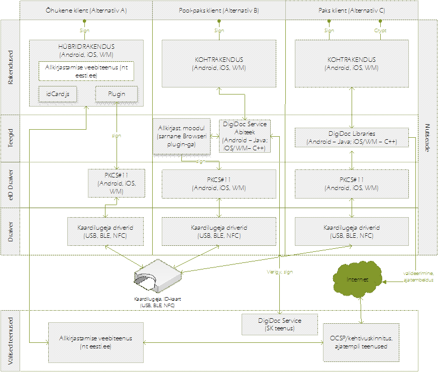

Peatükis vaatleme töökoha-arvutititel eksisteeriva allkirjastamise lahenduse alternatiive mobiilsetel platvormidel (allkirjastatud dokumentide loomine, haldamine, verifitseerimine). Lähtume eelnevas peatükis kaardistatud platvormi põhise PKCS#11 taristu kasutamisest ning võrdleme erinevaid võimalike rakendusarhitektuure.
Esimene võimalik rakendusarhitektuur (vt joonis 4, alternatiiv A) baseerub eelmises peatükis kirjeldatud eID veebilehitsejal. Autentimist ning signeerimist pakkuv veebilehitseja pakendatakse koos HTML5 tehnoloogiatel ehitatud allkirjastamise veebirakendusega poodidest laetavaks paketiks. Kõikide failidega tehtavate operatsioonide eest nagu konteinerite loomine, failide lisamine ja m-ID allkirjastamine vastutab JavaScript rakendus, mis kasutab veebilehitsejas saadaval olevaid native mooduleid ID-kaardiga allkirjastamiseks. Selle lähenemise eeliseks on suhteliselt lihtsam hallatavus ning koodi jagamine üle platvormide, kahjuks räägivad aga HTMLis realiseeritud kasutajaliideste kasutajakogemuse mitte vastamine platvormide standarditele, JavaScript keskkonna kiirus ning allkirjastatud failide käsitlemiseks mõeldud teekide puudumine. Alternatiivi puhul toimib ainult dokumentide allkirjastamine, failide hoidmist antud alternatiiv ei sisalda.
Teiseks valikuks on kohtrakendus, mis hõlmab endas õhukest kihti allkirjastatud failide metaandmete ning manuste lugemiseks, kuid kasutab allkirjastamiseks ning verifitseerimiseks DigiDocService teenust (vt joonis 4, alternatiiv B). Selle lähenemise eeliseks on võrdlemisi õhuke kiht failide lugemiseks, mida on lihtsusest tulenevalt efektiivne laiendada erinevatele platvormidele. Puuduseks aga pideva interneti ühenduse vajadus ka klassikaliselt offline (nt verifitseerimine) tegevuste jaoks ning otsene sõltuvus ühest teenusepakkujast.
Kolmandaks valikuks on kohtrakendus, mis kasutab vastavalt platvormile libdigidocpp või digidoc4j teeke ning sooritab kõik operatsioonid (v.a. m-ID signeerimine, OCSP, ajatempli küsimine) kohalikult (vt joonis 4, alternatiiv C). Lahenduse eelduseks on mobiilsete platvormide toe olemasolu vastavates teekides26. Selle lähenemise eelisteks on kiirus ning offline tugi.

Joonis 4 . Alternatiivsed lahendussuunad allkirjastamiseks
Kohtrakendustes, olgu need siis DigiDoc klienttarkvara või integraatorite loodavad lahendused, on minimaalse funktsionaalsuse tagamiseks tarvilikud iOS, Android ja WM platvormi põhised draiverid. Jätkusuutliku arenduse tagamiseks on tarvilik pakkuda ka allkirjafailide haldamiseks teeke analoogselt töökoha-arvutite platvormidele.
[26] iOS jaoks on võimalik edukalt portida libdigidoc ning libdigidocpp. Põhilist tähelepanu vajavad ARM protsessori arhitektuuri tugi, iOS toolchain tugi ning sertifikaatide käsitlemine. Niimoodi toimib tänane Finestmedia AS-i iOS DigiDoc app. Androidi jaoks on võimalik portida digidoc4j või libidigidocpp teegid. Põhilist tähelepanu vajavad tänaseks deprekeeritud jDigiDoc teegi kogemuste põhjal BouncyCastle asendamine SpongyCastle teegiga ning mälukasutuse optimeerimine allkirjafailide puhul. Niimoodi toimib tänane Finestmedia AS-i Android DigiDoc rakendus. Windows Mobile puhul puudub hetkel seadme keskkonda sobiv täisväärtuslik .NET teek (teadaolevalt on AgileWorks OÜ sõltumatult uurimas võimalusi selle loomiseks). Üheks võimalikuks lahenduseks on eksisteeriva libdigidocpp kasutamine läbi .ddl-iks kompileerimise, kuid seni teadaolevad katsetused sellist lahendust saavutada on ebaõnnestunud libdigidocpp poolt kasutatavate teekide tõttu.